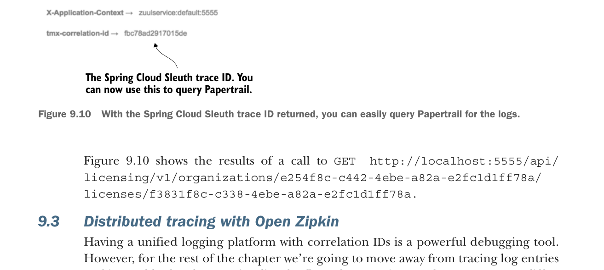

With the Spring Cloud Sleuth trace ID returned, you can easily query Papertrail for the logs.
Figure 9.10 shows the results of a call to GET http://localhost:5555/api/licensing/v1/organizations/e254f8c-c442-4ebe-a82a-e2fc1d1ff78a/licenses/f3831f8c-c338-4ebe-a82a-e2fc1d1ff78a.
9.3 Distributed tracing with Open Zipkin
Having a unified logging platform with correlation IDs is a powerful debugging tool. However, for the rest of the chapter we’re going to move away from tracing log entries and instead look at how to visualize the flow of transactions as they move across different microservices. A clean, concise picture can be work more than a million log entries.
Distributed tracing involves providing a visual picture of how a transaction flows across your different microservices. Distributed tracing tools will also give a rough approximation of individual microservice response times. However, distributed tracing tools shouldn’t be confused with full-blown Application Performance Management (APM) packages. These packages can provide out-of-the-box, low-level performance data on the actual code within your service and can also provider performance data beyond response time, such as memory, CPU utilization, and I/O utilization.
This is where Spring Cloud Sleuth and the OpenZipkin (also referred to as Zipkin) project shine. Zipkin (http://zipkin.io/) is a distributed tracing platform that allows you to trace transactions across multiple service invocations. Zipkin allows you to graphically see the amount of time a transaction takes and breaks down the time spent in each microservice involved in the call. Zipkin is an invaluable tool for identifying performance issues in a microservices architecture.